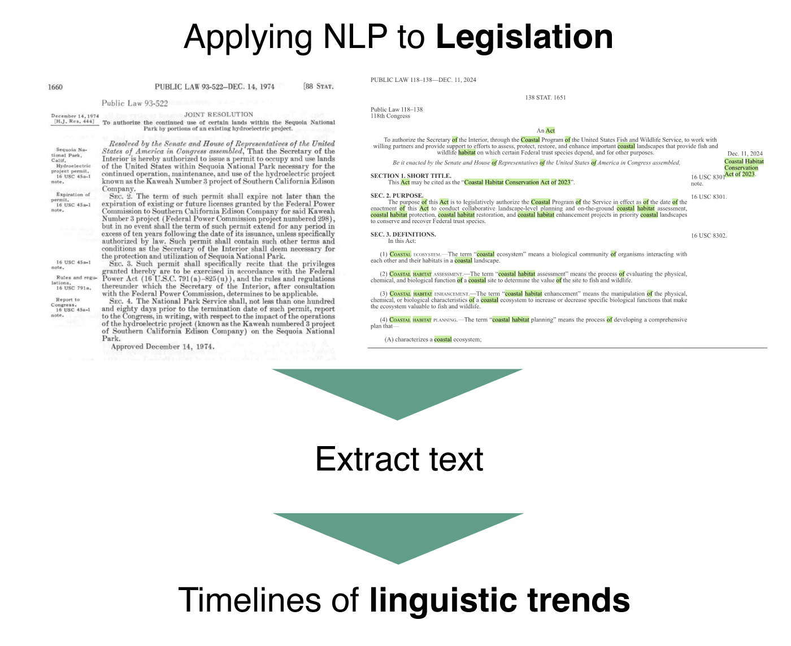

Background
A central challenge is that the legal record of this movement is vast and uneven. The period from 1973–2025 contains landmark statutes, minor amendments, and bills where environmental provisions are buried alongside unrelated policies. Traditional qualitative approaches tend to gravitate toward well-known laws such as the Clean Air Act or the Endangered Species Act. As a result, our historical narratives about American environmentalism often rest on selectively sampled texts, rather than a systematic view of how the language of environmental governance has evolved across the entire federal statutory landscape.
Natural Language Processing (NLP) is a branch of artificial intelligence and computational linguistics that enables computers to represent, analyze, and derive meaning from human language in text or speech form. By treating environmental laws as a large text corpus, NLP methods can quantify how certain themes, for example, pollution control, risk management, climate mitigation, adaptation, or environmental justice, change in statutory language over time. Rather than replacing close reading, NLP provides a complementary, corpus-level view: it surfaces patterns and changes in the language of American environmentalism that can then be interpreted in light of social movements, scientific developments, and political change.
Tracing American Environmental Policy
Early accounts of U.S. environmental policy describe its place as the“environmental decade,” during which federal statutes like the Clean Air Act, Clean Water Act, and Safe Drinking Water Act were passed. It was an era of bipartisan, environmentalism: Congress constructed a relatively centralized regulatory state, gave EPA broad authority, and adopted ambitious goals such as “productive and enjoyable harmony” between humans and nature. In 1973, the US was faced with the OPEC oil embargo, bringing the nation’s supply to a trickle. As a result, Nixon’s administration began seeking greater domestic oil and gas reserves to prevent future crises, leading to clashes between environmentalists and the administration. Scholars note that this first wave focused heavily on visible, point‑source pollution and on the protection of air, water, and iconic natural resources, with less systematic attention to distributional questions or long‑term climate risks.
By the late 1970s and 1980s, the federal government continued to legislate on emerging issues such as hazardous waste and toxic substances— CERCLA is a canonical example— but at the same time, administrations sought to constrain regulatory expansion through budget cuts, tighter oversight of EPA, and new requirements for regulatory impact analysis. Researchers in this period document a broadening of environmental concern from classic air and water pollution toward toxic wastes, ocean dumping, and land-use planning, while also tracing how economic efficiency arguments and “regulatory reform” politics reshaped the terms on which environmental protection was debated.
From the 1990s onward, a third wave of law stresses the fragmentation and diversification of environmental policy, including the growing prominence of climate change, sustainability, and environmental justice. Scholars argue that environmental governance became more multi‑level and issue‑specific, with market‑based instruments (such as emissions trading) supplementing or partially displacing traditional command‑and‑control regulation. Meanwhile, environmental justice advocates and public health researchers pushed questions of distribution and equity onto the federal agenda, leading to new frameworks for integrating environmental justice into regulatory analysis and permitting and to an expanding body of legislation and guidance.
In the 2000s and 2010s, U.S. environmental policy was increasingly structured around energy and climate, as well as environmental justice and equity. However, this came at the cost of strong partisanship, particularly into the 2010s. Following the Trump administration’s rolling back of numerous regulations and the withdrawal from the Paris Agreement, states, cities, tribes, and private actors increasingly positioned themselves as climate and environmental leaders. By the early 2020s, with the Biden administration’s climate agenda, the Inflation Reduction Act, and initiatives like Justice40 and new environmental justice executive orders, scholars and advocates increasingly describe U.S. environmental policy as a field where climate mitigation, infrastructure investment, and justice concerns are formally linked, even as implementation remains uneven and heavily mediated by state and local capacity.
Critically, almost no issue can be defined as taking place entirely in one time period. Environmental justice, for example, became a mainstream perspective in popular environmentalism in recent years. However, its terminology dates back to the 1983 Warren County Protests against PCB, and is exemplified in even earlier movements, such as in West Harlem’s protests against a sitting sewage treatment plant. Defining an entire decade by trends in its federal policy erases local work, but also overwrites the nuances across conservation interests. Still, some issues are fairly rooted in time: take, for example, depletion of the ozone layer. Ungar 2003 discusses the cultural presence of the ozone layer in the 1980s and 1990s due to its “digestible” nature, as well as its subsequent disappearance due to the effective Montreal Protocol. Thus, discussion of this topic in legislation would likely change, or disappear altogether outside of this two-decade span.
For this project, periodization provides a conceptual scaffold: NLP methods can be used to test and refine these narratives by tracking when the language associated with conservation, risk, markets, climate, and justice rises and falls in statutory text, rather than assuming sharp breaks at familiar political milestones.

Natural Language Processing
Natural Language Processing (NLP) is a field at the intersection of computer science, linguistics, and machine learning that focuses on building computational methods to represent and analyze human language as data. In practice, NLP techniques transform unstructured text (in this project, laws) into numerical representations that algorithms can cluster and classify at scale. For policy research, it enables us to build on close reading of a handful of documents to systematic analysis of thousands of pages of legal text.
NLP is increasingly applied to environmental policy as a means of handling the volume and complexity of relevant text. One prominent line of work uses NLP pipelines to speed up and standardize the identification and classification of policies. Given a large collection of legal documents, these pipelines can scrape text, then either classify documents into predefined categories (e.g., “climate mitigation policy,” “adaptation plan,” “land restoration incentive”) or discover latent topics using unsupervised methods. This has been used, for example, to separate climate‑relevant policies that may be hidden in broader legislative corpora, to catalogue the types of incentives used in land‑restoration schemes, and to map how often different instruments such as tax credits, standards, subsidies, informational tools, are mentioned in policy texts. Thus, these algorithms do not claim to “understand” the law, but rather quickly surface patterns and candidate documents that would otherwise be missed or take weeks of manual screening.
In more recent years, there is a growing interest in using NLP to evaluate policy in relation to broader sustainability goals. Here, NLP‑derived features, such as topics, sentiments, or target references, can be linked to external indicators such as emissions trends, investment flows, or progress on climate and biodiversity commitments. This allows researchers to ask whether jurisdictions whose legislation leans heavily on certain themes (ex., market mechanisms, resilience, justice) behave differently in measurable ways, or whether policy language and material outcomes have come apart.
In this project, we employ two NLP techniques for legislative exploration: topic modelling and word embedding. These enable us to examine trends in language between years, as well as how meaning develops across time.